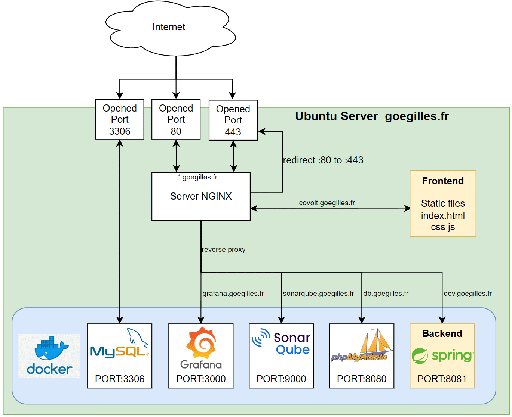

🏗️ Architecture du Serveur
📋 Comment fonctionne le serveur
Notre infrastructure est hébergée sur un serveur Ubuntu (goegilles.fr) et utilise une architecture moderne basée sur des conteneurs Docker.
Composants principaux :
- NGINX : Serveur web qui gère le routage HTTP/HTTPS et la redirection automatique vers HTTPS (port 443)
- Frontend : Interface utilisateur statique servie via covoit.goegilles.fr
- Backend Spring : API REST Spring Boot exposée sur le port 8081 via dev.goegilles.fr
- MySQL : Base de données relationnelle (port 3306)
- Grafana : Monitoring et visualisation des métriques (port 3000)
- SonarQube : Analyse de qualité du code (port 9000)
- phpMyAdmin : Interface de gestion MySQL (port 8080)
Le serveur NGINX agit comme un reverse proxy, dirigeant les requêtes entrantes vers les services appropriés en fonction du sous-domaine demandé. Toutes les communications sont sécurisées via HTTPS (port 443).